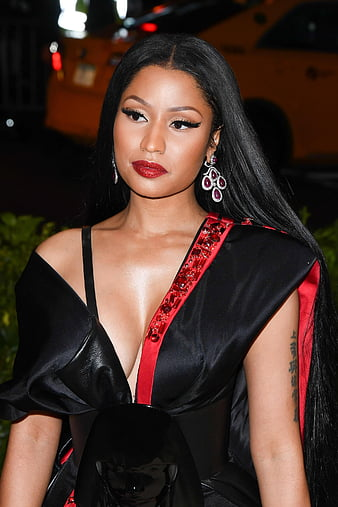

Why Nicki Minaj?
Why Nicki Minaj is the best..
Nicki Minaj isn't just a rapper; she's a Trinidadian-born phenomenon who turned island roots into global dominance. Born Onika Tanya Maraj in Saint James, Trinidad and Tobago, she became a Trinidadian rapper, singer, and songwriter who redefined what a female MC could be, blending razor-sharp bars with pop-star charisma.
The numbers speak for themselves: 100 million records sold worldwide, making her the best-selling female rapper of all time, with Billboard crowning her the greatest ever. Her debut Pink Friday was the first album by a solo female rapper to go platinum in seven years, and she's stacked six American Music Awards, 11 BET Awards, and ten Grammy nominations along the way.
She didn't just top charts; she built an empire, an alter ego, and a whole "Barbz" nation, proving one Trini girl could run rap.
SONGS
My favorite songs by Nicki Minaj
Super Bass
Featured on the deluxe edition of Nicki Minaj's debut studio album Pink Friday, this became her most commercially successful track from the record. It peaked at number three on the Billboard Hot 100 and was later certified Diamond by the RIAA for selling 10 million equivalent units in the US. Minaj has described the song as a playful take on having a crush on someone.
Release
April 5,2011
Lyrics
"This one is for the boys with the boomin' system Top down, AC with the cooler system When he come up in the club, he be blazin' up Got stacks on deck like he savin' up And he ill, he real, he might gotta deal He pop bottles and he got the right kind of build He cold, he dope, he might sell coke..."
See full lyricsMoment 4 Life
A standout track from Pink Friday featuring Drake, this song reflects on Minaj's rise to success and living fully in her breakout moment. It became one of the defining songs of the album's rollout.
Release
December 7,2010
Lyrics
"I fly with the stars in the skies, I am no longer tryin' to survive I believe that life is a prize, but to live doesn't mean you're alive D-d-don't worry 'bout me and who I fire, I get what I desire, it's my empire And yes, I call the shots, I am the umpire, I sprinkle holy water upon a vampire ('pire)..."
See full lyricsYour Love
The lead single from Pink Friday, this track samples Annie Lennox's "No More 'I Love You's'" and became Minaj's breakthrough solo hit, helping introduce her sound to mainstream audiences ahead of the album's release.
Release
June 1,2010
Lyrics
"You got spark, you, you got spunk You, you got something all the girls want You're like a candy store (Ah) and I'm a toddler (Ah) You got me wanting more and m-m-more of..."
See full lyrics